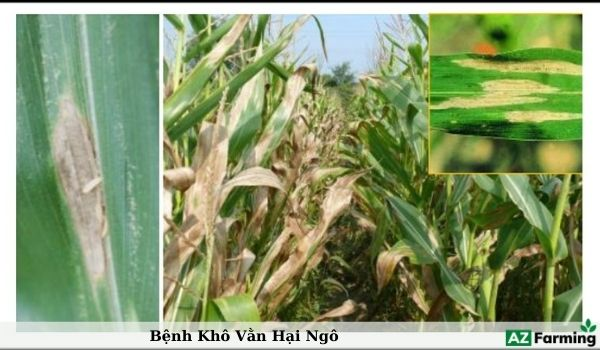
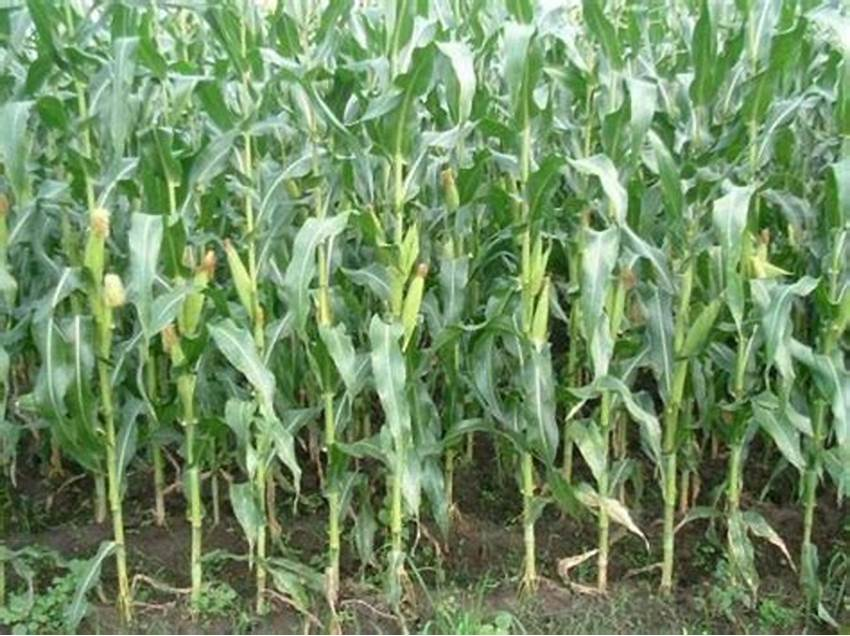
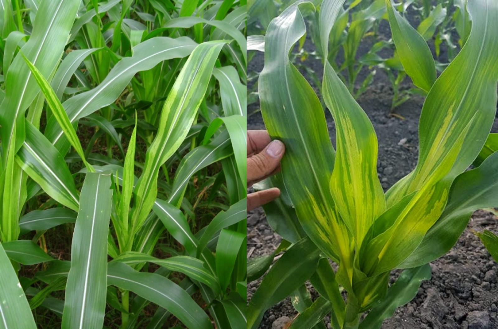
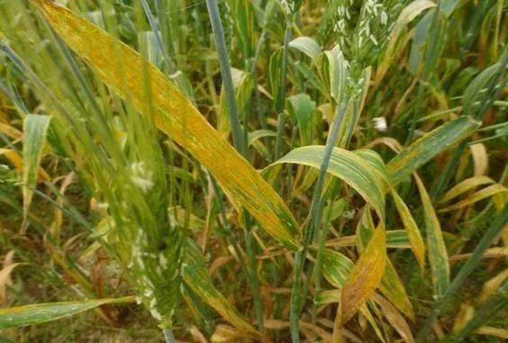
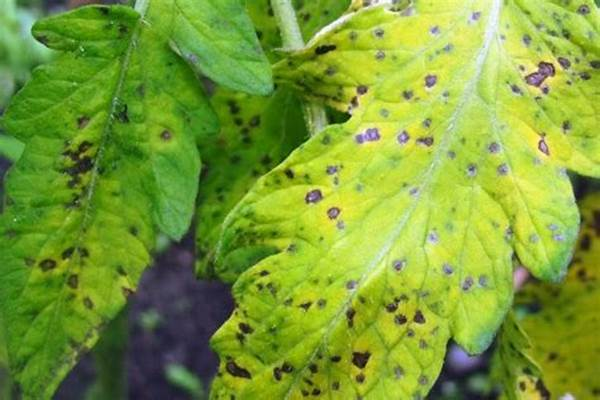
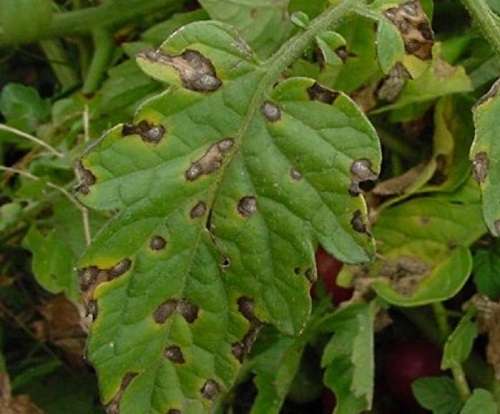
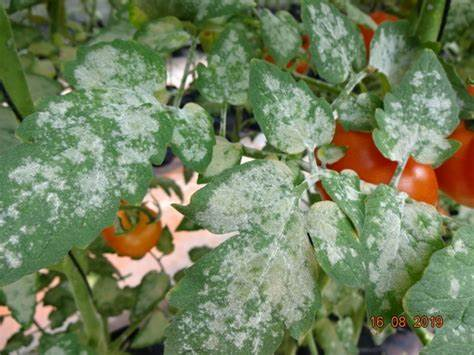
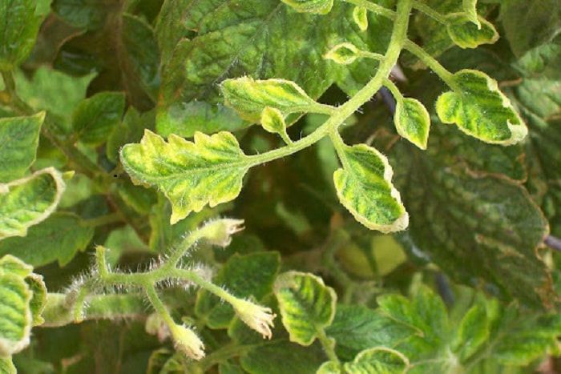
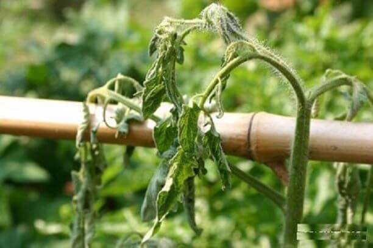
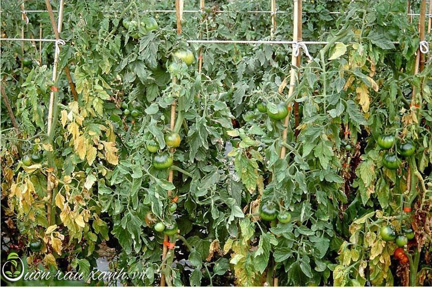

*Tác nhân gây bệnh
Bệnh do nấm Helminthosporium turcicum gây ra
*Biện pháp phòng trừ
– Luân canh trồng ngô với cây họ đậu.
– Dùng giống ngô chống bệnh
– Thu gom tàn dư cây ngô rồi đưa ra khỏi ruộng tiêu huỷ.
Bệnh gỉ sắt
*Tác nhân gây bệnh
Bệnh do nấm Puccinia maydis gây ra.
*Biện pháp phòng trừ
– Vệ sinh đồng ruộng, tiêu diệt nguồn bệnh. Tăng cường thâm canh.
– Dùng thuốc trừ nấm: New Kasuran; Dithane; Anvil; Kumulus; Cavil; Tilvil; Vectra; Copper – zin C…

Bệnh khô vằn
* Triệu chứng bệnh
Bệnh hại trên các bộ phận phiến lá, bẹ lá, thân và bắp ngô tạo ra các vết bệnh lớn màu xám tro, loang lổ đốm vằn da hổ, hình dạng bất định như dạng đám mây.
*Nguyên nhân gây bệnh
Bệnh do nấm Rhizoctonia solani Kuhn gây ra.
*Biện pháp phòng trừ
Khi bệnh xuất hiện có thể phun thuốc Validacin 5SL (1,5 l/ha); Tilt super 300ND 0,1% ( 0,4 l/ha); Rovral 50WP – 0,2% (1,5 kg/ha). Phun 2 – 3 lần cách nhau 10 ngày, kết hợp tỉa bóc lá bệnh khô chết trên cây.

Bệnh thối thân
*Tác nhân gây bệnh
– Bệnh do vi khuẩn Pseudomonas alboprecipitanas Rosen gây ra
*Biện pháp phòng trừ
– Sau thu hoạch dọn sạch tàn dư cây trồng đem ra khỏi ruộng và tiêu huỷ
– Dùng một số loại thuốc trừ vi khuẩn đặc hiệu phun trừ bệnh trên ngô theo chỉ dẫn.

Bệnh virus sọc lá ngô
*Tác nhân gây bệnh
– Bệnh do virus Maize streak gây nên. Virus gây bệnh truyền bệnh chủ yếu bằng con đường môi giới là các loại rầy Calligypona pellucida, C.marginata, C.propinqua…Virus phát triển mạnh trong điều kiện nhiệt độ từ 17 – 24oC.
*Biện pháp phòng trừ:
– Dùng giống chống bệnh
– Gieo ngô đúng thời vụ
– Phun thuốc trừ môi giới truyền bệnh bằng các loại thuốc đặc hiệu: Cypermethrin, Dimethoate, Nereistoxyn, …

Bệnh khảm ngô
*Triệu chứng
Ở gốc lá có các chấm màu đậm xen lẫn với màu nhạt, sau đó hoà hợp với nhau thành từng vết dọc theo phiến lá, lá bệnh chuyển dần sang màu vàng, về sau ở ria và đỉnh lá có pha sắc đỏ, màu đỏ dần hiện rõ lên.
*Tác nhân gây bệnh: Bệnh do virus Maize dwarf mosaic gây ra
*Biện pháp phòng trừ
– Chọn cây sạch bệnh để lấy hạt làm giống
– Diệt côn trùng môi giới truyền bệnh (rệp)
– Vệ sinh đồng ruộng, làm sạch cỏ dại, thâm canh cây ngô.
Cây Cà chua

Bệnh đốm lá
Bệnh đốm lá là loại bệnh do vi khuẩn Septoria lycopersici gây ra.
Biện pháp phòng trừ:
Loại bỏ tất cả các lá bị nhiễm bệnh ngay khi bạn nhìn thấy chúng và sau đó phun các phần còn lại của cây bằng thuốc diệt nấm hữu cơ dựa trên đồng hoặc kali bicacbonat.

Bệnh thán thư
Bệnh thán thư cây cà chua do nấm Colletotrichum phomoides gây ra.
Biện pháp phòng bệnh:
Chọn giống ít nhiễm bệnh, trồng thưa và làm giàn chống để tạo sự thoáng khí cho cây. Tưới nước nhỏ giọt nên rễ tránh tưới quá nhiều lên lá cây đồng thời nên thu hoạch cà chua đúng thời điểm tránh để quả quá chín dễ mắc bệnh. Thu gom tiêu hủy các quả bị bệnh tránh lây lan trên diện tích rộng.
Khi phát hiện bệnh mới chớm nên phun một trong các loại thuốc sau: hoạt chất Azoxystrobin như Amista; hoạt chất Metomenostrobin như Ringo-L 20SC hoặc phun một trong các loại thuốc sau: Amistar 250SC, Plant 50WP, Antracol 70WP, Polyram 80DF, Daconil 500SC,…. Theo hướng dẫn sử dụng trên bao bì.

Bệnh phấn trắng
Bệnh phấn trắng là một bệnh nhiễm nấm có thể nhận biết ngay lập tức chính là lớp lá và thân cây bị mốc trắng bao phủ.
Biện pháp phòng trừ:
Nếu bạn phát hiện ra vấn đề sớm, hãy cắt bỏ và tiêu hủy tất cả các lá bị ảnh hưởng, sau đó phun cho cây hàng tuần với hỗn hợp một phần sữa với năm phần nước trong thời gian nấm mốc vẫn còn hoặc sử dụng thuốc xịt phòng ngừa bằng sulphur để điều trị.

Bệnh cuốn lá
Sâu cuốn lá cà chua, còn được gọi là bệnh xoăn lá là do nhiễm virus thường do rệp lây lan hoặc mang vào vườn của bạn thông qua cây con bị nhiễm bệnh.
Biện pháp phòng trừ:
Cách chữa duy nhất là loại bỏ những cây bị nhiễm bệnh và xử lý chúng đúng cách. Tuy nhiên, hãy lưu ý rằng hiện tượng quăn lá tạm thời có thể xảy ra khi tưới nước không nhất quán, vì vậy hãy loại trừ nguyên nhân này trước khi thực hiện nhổ cây.

Bệnh úa sớm
Tác nhân gây bệnh
Bệnh úa sớm trên cây cà chua còn được biết đến là bệnh đốm vòng, đây là loại bệnh thường xảy ra phổ biến trên cây cà chua do nấm Alternaria linariae là tác nhân gây ra.
Bệnh úa sớm có khả năng gây hại trên các loại cây thuộc họ cà như: cà chua, cà tím, ớt, khoai tây…
Khi gây hại, bệnh thường làm rụng lá của cây và từ đó làm giảm năng suất

Bệnh héo rũ
Triệu chứng
Khi mới xâm nhập và phát triển bệnh, cây cà chua sẽ xuất hiện biểu hiện như bị héo một phần hoặc héo cả cây.
Biện pháp quản lý
Tăng cường bón phân hữu cơ sinh học và các loại phân hữu cơ ủ hoai mục
Tạo rãnh thoát nước tốt cho vườn cà chua
Cải thiện pH đất bằng cách phun vôi định kỳ hoặc sử dụng bộ đôi Vermi Max + Ligno Max của Tanixa


.jpg)